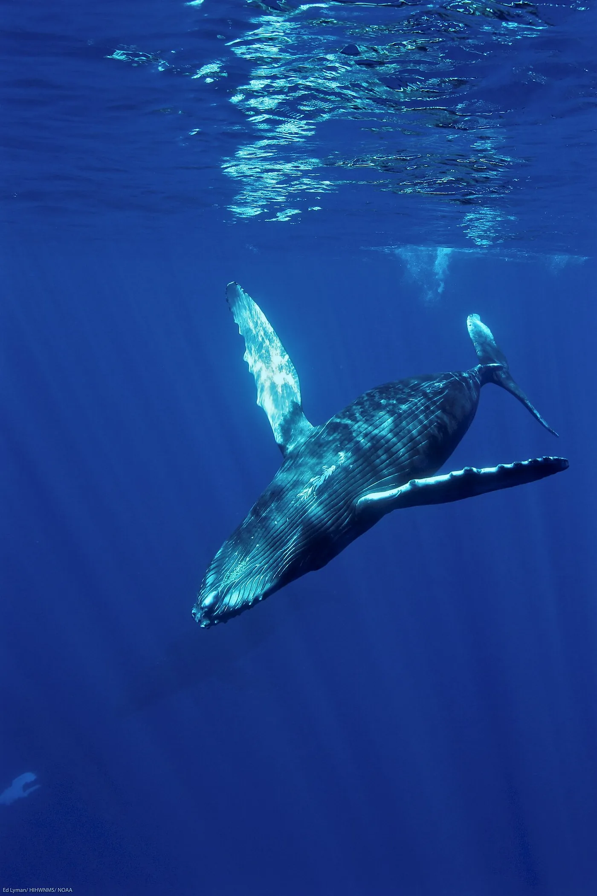

01
Отношения с собой и другими
Семья, дружба, партнёрство. Повторяющиеся ссоры, обиды, ощущение «я больше не могу так».
психолог · транзактный анализ
Психологическая работа о том, как быть в отношениях — с собой, близкими и делом — не теряя себя. Бережно, честно и в вашем темпе.

Чаще всего — с тем, что «вроде всё нормально», но внутри давно не нормально. Ниже — темы, с которыми я работаю. Если вашей нет в списке, напишите: честно скажу, смогу ли помочь.
Семья, дружба, партнёрство. Повторяющиеся ссоры, обиды, ощущение «я больше не могу так».
Когда привычное перестало работать, а новое ещё не появилось. И непонятно, куда двигаться.
«Кто я, чего хочу, что моё?» — в профессии, в отношениях, в жизни. Без готовых ответов.
Когда внутри звучит чужой голос, а собственный — теряется. И хочется наконец на себя опереться.
Границы, договорённости, страх проявляться, выгорание. Когда дело есть, а радости от него — нет.
Когда нужен рядом человек, который выдержит, не обесценит и не станет учить жить.
С чем я не работаю: несовершеннолетние, РПП, установленные расстройства психики. В этих случаях лучше обратиться к профильному специалисту — это честнее, чем тянуть.
Я работаю в транзактном анализе и учусь интегративной психотерапии, сфокусированной на отношениях. Для меня терапия — не «найти дефект и вырезать».
Пока нет ощущения, что вас не обесценят, любые слова остаются словами. Поэтому мы идём в вашем темпе — не быстрее, чем можно.
То, что сейчас мешает, когда-то помогало выживать. Мы не вырываем страховку — мы постепенно меняем почву под ногами.
Повторяющийся сценарий виден в контакте: с собой, с близкими, со мной. Там же он и меняется.
Близкий контакт — это всегда риск. Часто первый безопасный контакт у человека бывает именно с психологом.
Без анкет на десять страниц и «правильных» формулировок. Достаточно сделать первый шаг — остальное разберём вместе.
Коротко: что происходит и чего хочется. Можно в двух словах — я задам остальные вопросы.
Обсудим формат, время и стоимость. Онлайн — из любой точки. Офлайн — кабинет в центре города, адрес пришлю при записи.
Регулярные встречи в вашем ритме. Не «лечить» и не «исправлять» — понимать и постепенно менять.
Первая встреча — не экзамен. Можно прийти с тем, что пока не складывается в слова.
Меня зовут Вика. Я психолог-консультант в модальности транзактного анализа. По первому образованию — врач: привыкла смотреть на человека целиком, а не на отдельный симптом.
Сейчас параллельно изучаю интегративную психотерапию, сфокусированную на отношениях и возрастном развитии, и прохожу трёхгодичную углублённую программу по транзактному анализу (202) в Московском институте психоанализа — у психиатра-нарколога Дмитрия Ивановича Шустова.
Моя цель в профессии — международная сертификация в Европейской ассоциации транзактного анализа. Не для статуса, а чтобы работать на уровне, за который не стыдно.
Мне важно, чтобы в кабинете — и онлайн, и офлайн — можно было быть настоящим. Даже если «настоящий» сейчас устал, злится или не знает, чего хочет.Вика · из канала «викиныкиты»
Если своего вопроса не нашли — просто напишите. Отвечаю лично.
Задать вопрос в Telegram ↗Не нужно готовиться и знать, «как правильно». Напишите пару слов о том, что происходит, — я задам остальные вопросы.
Онлайн · офлайн · взрослые